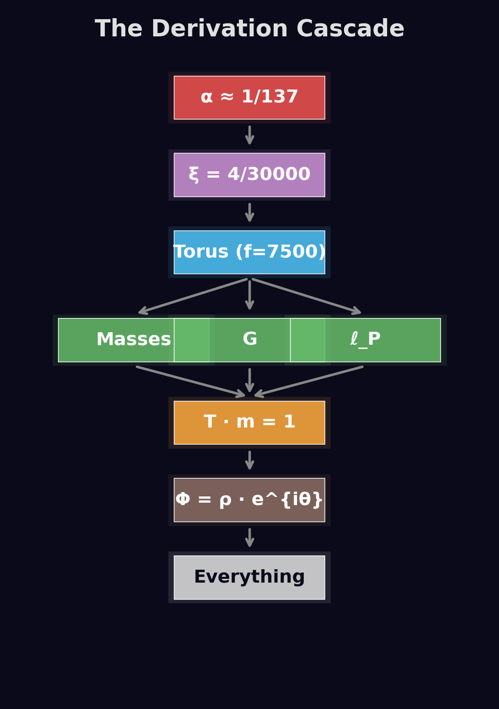
Stellen Sie sich vor, Sie könnten das gesamte Universum mit nur einer einzigen Zahl beschreiben. Nicht mit Dutzenden von Naturkonstanten, nicht mit komplexen Gleichungssystemen — sondern mit einem einzigen geometrischen Parameter.
Diese Zahl lautet ξ = 4/3 × 10⁻⁴ — etwa 0,000133. Dimensionslos, eine reine Zahl ohne Einheit. Und aus dieser winzigen, unscheinbar wirkenden Zahl erwachsen alle fundamentalen Eigenschaften unseres Universums: die Lichtgeschwindigkeit, die Gravitationskonstante, das Plancksche Wirkungsquantum, die Feinstrukturkonstante — einfach alles.
Der Wert ist kein Zufall. ξ wurde nicht aus α abgeleitet, sondern aus der Geometrie selbst: aus der Torus-Topologie des Universums und der Kugeltetraederpackung — der dichtesten Packung von Kugeln im dreidimensionalen Raum. Daraus ergaben sich harmonische Resonanzen, die zu den beobachteten Massenverhältnissen führen.
Die fraktale Dimension der Raumzeit: ξ definiert, wie „körnig" die Raumzeit auf kleinsten Skalen ist. Die Dimension beträgt nicht exakt 3, sondern Df = 3 − ξ ≈ 2,999867. Dieser winzige Unterschied reguliert alle Divergenzen der Quantenfeldtheorie und verhindert Singularitäten.
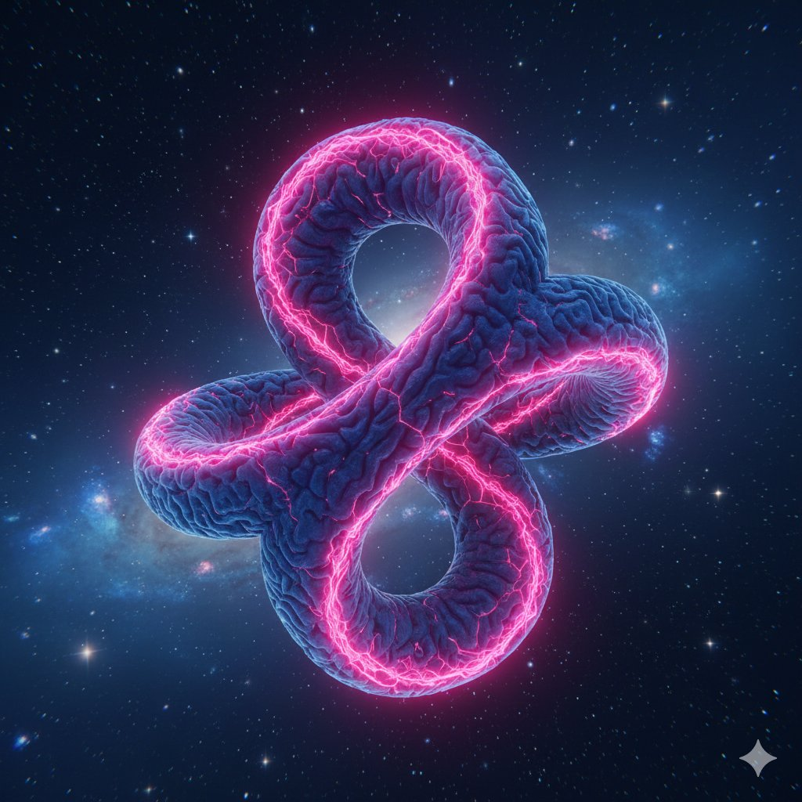
Während ein Embryo heranwächst, vergrößert sich das Gehirn nicht durch Expansion seines Volumens, sondern durch Zunahme seiner Windungen — der Faltung der Hirnrinde. Mehr Windungen bedeuten mehr Oberfläche, mehr Komplexität, mehr Informationsverarbeitung.
Ähnlich verhält es sich mit dem Universum: Die Raumzeit bleibt im Wesentlichen statisch, aber ihre innere, fraktale Komplexität nimmt zu. Was wir als Expansion wahrnehmen, ist eine Veränderung der fraktalen Tiefe — eine Zunahme der „Windungen" der Raumzeit, ohne dass sie sich tatsächlich aufbläht.
Stellen Sie sich vor, Sie betrachten eine Karte mit immer höherer Auflösung: Zunächst sehen Sie nur grobe Umrisse, dann Straßen, dann Häuser, schließlich einzelne Bäume. Die Landschaft hat sich nicht verändert, aber Ihre Wahrnehmung ihrer Komplexität hat zugenommen.
Kernbotschaft: Der Raum dehnt sich nicht aus — die fraktale Struktur entfaltet sich und wird komplexer. Wie ein Gehirn, das nicht durch Ausdehnung, sondern durch Faltung wächst.
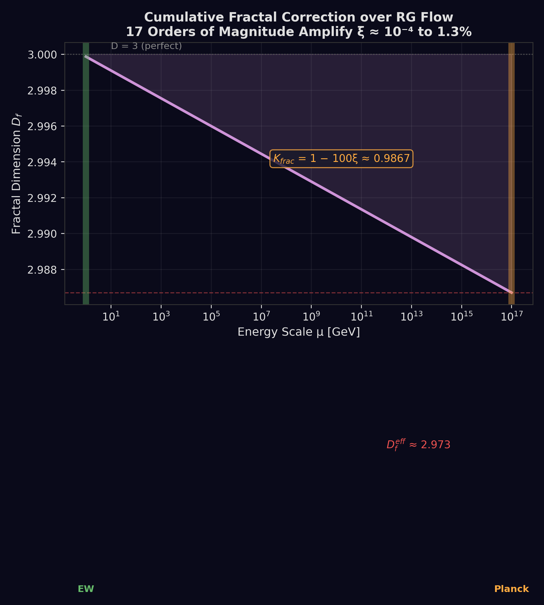
Wenn wir versuchen, Quantenfeldtheorie auf einer perfekt glatten Raumzeit zu betreiben, erhalten wir unendliche Werte — sogenannte ultraviolette Divergenzen. Um sie loszuwerden, müssen wir „renormieren" — geschickt Unendlichkeiten voneinander subtrahieren. Das funktioniert, fühlt sich aber an wie Schummeln.
In der Nähe von Schwarzen Löchern oder beim Urknall sagt die Allgemeine Relativitätstheorie, dass die Krümmung gegen unendlich geht — eine Singularität. An diesen Punkten brechen alle Gesetze zusammen.
Die FFGFT löst beide Probleme auf einen Schlag. Die Volumenskalierung folgt nicht mehr V ~ r³, sondern V ~ rDf = r3−ξ. Für große Abstände macht das keinen Unterschied. Aber für winzige Abstände nahe der Planck-Skala ändert sich alles: Die Unendlichkeiten verschwinden, die Theorie bleibt finit.
Die Metapher: Bei einem perfekt glatten Raum wäre Df = 3 — wie ein Gehirn ohne Windungen, eine glatte Kugel. Ein solches Gehirn könnte nicht denken. Erst die Windungen machen Komplexität und Intelligenz möglich. So macht die fraktale Körnigkeit das Universum „lebendig".
Die zweite Säule der FFGFT: Zeit und Masse sind nicht unabhängig, sondern zwei Aspekte derselben fundamentalen Realität.
In Regionen hoher Massendichte vergeht die Zeit langsamer. Wo weniger Masse ist, läuft die Zeit schneller. Das Produkt bleibt konstant — das Universum als Ganzes bleibt im Gleichgewicht.
Diese Dualität folgt zwingend aus der fraktalen Selbstähnlichkeit: Wenn wir die Skala um ξ ändern, müssen sich Zeit und Masse so transformieren, dass ihr Produkt invariant bleibt. Nur so bleibt das Vakuum stabil.
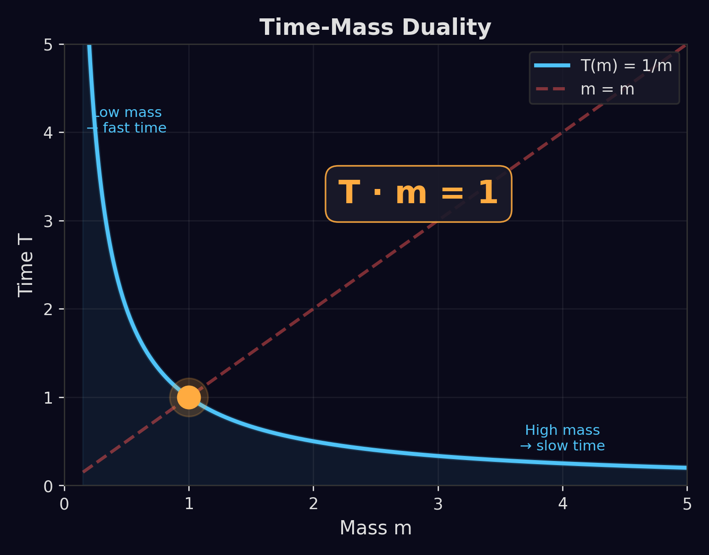
Die Hyperbel T · m = 1: Jedes Teilchen sitzt auf derselben Kurve
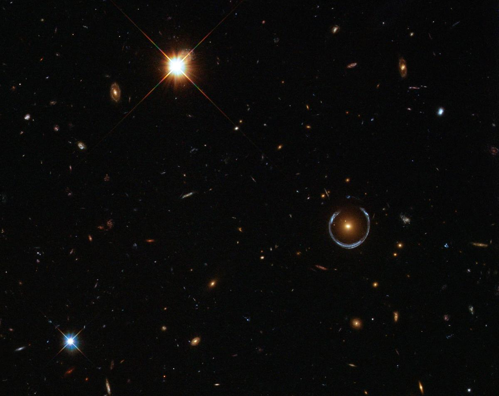
Einsteins ART ist eine der erfolgreichsten Theorien aller Zeiten. Und doch leidet sie unter fundamentalen Problemen.
1. Singularitäten: Im Zentrum Schwarzer Löcher und am Urknall divergiert die Krümmung ins Unendliche. Die FFGFT löst das: die effektive Krümmung bleibt stets endlich, begrenzt durch Reff ≤ ξ²/ℓP². Die fraktale Körnigkeit wirkt als eingebauter Dämpfungsmechanismus.
2. Dunkle Materie & Dunkle Energie: 95% des Universums bestehen angeblich aus unsichtbarer Substanz. Die FFGFT sagt: Es gibt keine Dunkle Materie und keine Dunkle Energie. Was wir beobachten, sind Effekte der fraktalen Modifikation der Gravitation.
3. Quanteninkompatibilität: ART und Quantenmechanik sprechen verschiedene Sprachen. Die FFGFT erklärt Quantenphänomene als Emergenz aus der fraktalen Struktur — die Theorie ist von Natur aus UV-finit.
Die FFGFT löst nicht eines dieser Probleme — sie löst alle drei auf einmal, mit einem einzigen Parameter. Das ist die Macht der Einfachheit.
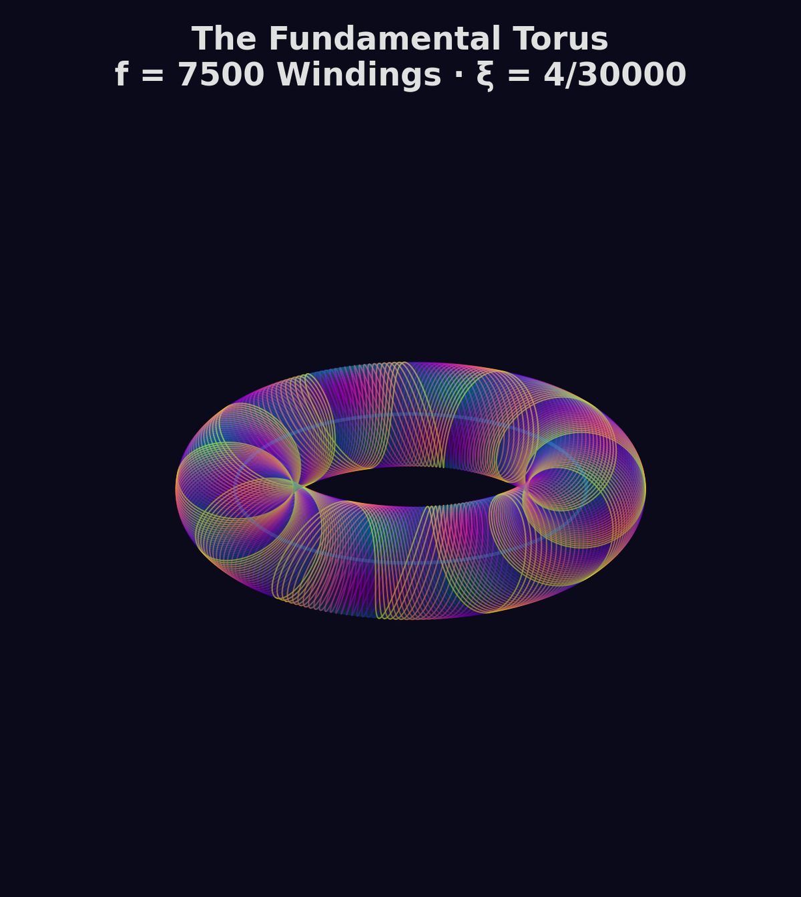
In der klassischen ART kollabiert Materie im Zentrum eines Schwarzen Lochs zu einem Punkt unendlicher Dichte — einer Singularität. Die FFGFT zeigt: Das ist eine Illusion.
Die fraktale Dimension ändert sich in der Nähe des Horizonts dramatisch: Df → 2 + ξ ≈ 2,000133. Die Raumzeit wird effektiv zweidimensional — eine fraktale Membran, nicht ein dreidimensionaler Raum mit einem Punkt im Zentrum.
Ein Blatt Papier hat kein „Inneres" — es ist seine Oberfläche. Ebenso ist ein Schwarzes Loch in der FFGFT seine fraktale Horizontstruktur, auf der Information kodiert wird, nicht dahinter.
Die Hawking-Strahlung entsteht nicht durch zufällige Teilchenpaare, sondern durch Schwingungen der fraktalen Membranoberfläche. Die emittierte Strahlung trägt subtile Korrelationen — Information bleibt erhalten.
Metapher: Ein Schwarzes Loch ist wie eine tiefe Falte im kosmischen Gehirn — eine Region extremer Komplexität, wo die Windungen so eng gepackt sind, dass Licht nicht entkommen kann. Aber es gibt keinen Riss, keine Singularität.
Die Spezielle Relativitätstheorie mit ihrer Konstanz der Lichtgeschwindigkeit und der Lorentz-Invarianz ist keine fundamentale Eigenschaft des Universums — sie ist eine Konsequenz der fraktalen Hierarchie.
Die Lichtgeschwindigkeit emergiert aus dem Verhältnis zwischen ξ und der fundamentalen Zeitskala. In der FFGFT ist c keine fundamentale Konstante, sondern eine Folge der Geometrie:
Einsteins berühmte Formel E = mc² wird zur Konsequenz der Zeit-Masse-Dualität: Masse ist gespeicherte Zeit, Energie ist Zeit in Bewegung.
Die Zeitdilatation und Längenkontraktion sind direkte Konsequenzen der fraktalen Struktur: Bewegte „Gedanken" im kosmischen Gehirn laufen langsamer ab — nicht weil Raum und Zeit fundamental sind, sondern weil die fraktale Hierarchie dies erzwingt.
Testbare Vorhersage: Bei extrem hohen Energien (nahe der Planck-Skala) sollten subtile Abweichungen von der perfekten Lorentz-Invarianz auftreten, die mit ξ skalieren.
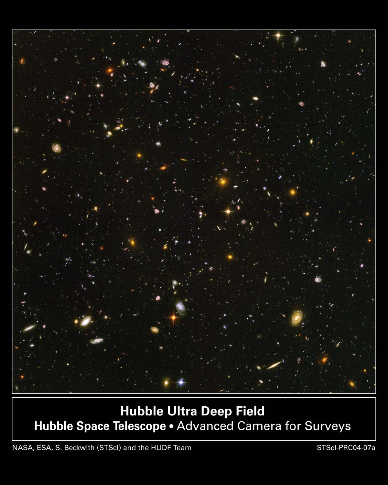
Das klassische kosmologische Konstantenproblem: Die Quantenfeldtheorie sagt eine Vakuumenergiedichte von ~10¹¹³ J/m³ voraus. Beobachtet wird ~10⁻⁷ J/m³. Die Diskrepanz: 120 Größenordnungen — eine der peinlichsten Fehlvorhersagen der Physik.
Die FFGFT löst das Problem parameterfrei:
Der kleine Parameter ξ² ≈ 1,77 × 10⁻⁸ dämpft die riesige Planck-Energie auf beobachtbare Werte — ohne jede Feinabstimmung. Es gibt keine echte Expansion des Raums und keine mysteriöse abstoßende Kraft.
Was wir messen — die zunehmende Rotverschiebung ferner Objekte — ist die natürliche Konsequenz der langsam fortschreitenden fraktalen Vertiefung, gesteuert allein durch ξ. Wie ein aktives Gehirn Energie verbraucht, um seine Strukturen aufrechtzuerhalten, so „verbraucht" das fraktale Vakuum Energie für seine fortgesetzte Vertiefung.
Die FFGFT ist keine „alles-passt"-Theorie — sie liefert präzise, messbare Abweichungen von der Standardphysik, die in den kommenden Jahren überprüfbar sind.
0,5–1% Abweichung vom ART-Wert. Nachweisbar mit nächster Generation EHT (ngEHT, ab 2030).
Logarithmische Frequenzkorrektur ~0,1–0,5%. Testbar mit LISA (2035+) und Einstein Telescope.
Subtile Korrelationen Cℓ ∝ ℓξ auf kleinen Winkelskalen. Messbar mit CMB-S4 und LiteBIRD.
α̇/α ≈ 2ξ̇/ξ ≈ 10⁻¹⁸/Jahr — am Rand aktueller Messpräzision mit Atomuhren.
Die fundamentale Messgrenze: Unsere Messgeräte sind selbst Teil des fraktalen Vakuums. In einem Universum, in dem alle Konstanten aus einem Parameter emergieren, gibt es keinen externen Referenzrahmen. Daher sind Verhältnisse robuster als Absolutmessungen.
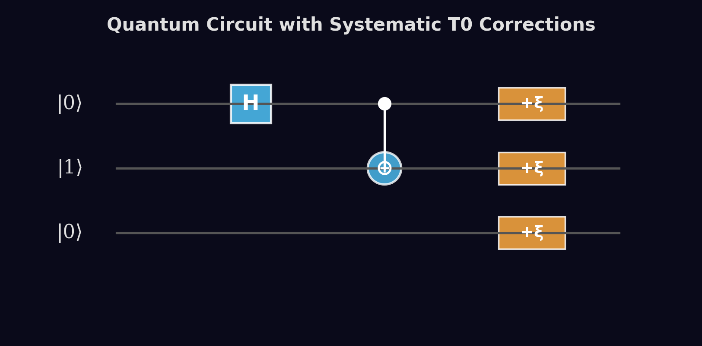
Loop Quantum Gravity quantisiert die Raumzeit in diskrete Schleifen. Stringtheorie braucht 10/11 Dimensionen. Die FFGFT geht einen anderen Weg: Sie quantisiert nicht die Raumzeit — sie zeigt, dass Quantenphänomene aus der fraktalen Struktur emergieren.
Die Heisenbergsche Unschärferelation erhält eine logarithmische Korrektur:
Auf großen Skalen ist die Korrektur vernachlässigbar — klassische Physik. Auf kleinsten Skalen wird die Unschärfe verstärkt, was Divergenzen verhindert. Die effektive Plancksche Konstante wird skalenabhängig: bei kleinem x wächst ℏeff logarithmisch, die Kopplung wird schwächer — das Gegenteil der divergenten Renormierung.
Gravitation selbst ist eine emergente Phasenverschiebung des Vakuumfeldes — analog zur Metrik in der Hydrodynamik von Superfluiden.
Quantengravitation muss nicht von außen erzwungen werden — sie ist bereits da, eingebaut in die fraktale Natur der Raumzeit. Das kosmische Gehirn denkt nicht durch willkürliche Quantensprünge einzelner Neuronen — es denkt durch die kollektive, fraktale Vernetzung seiner Windungen.
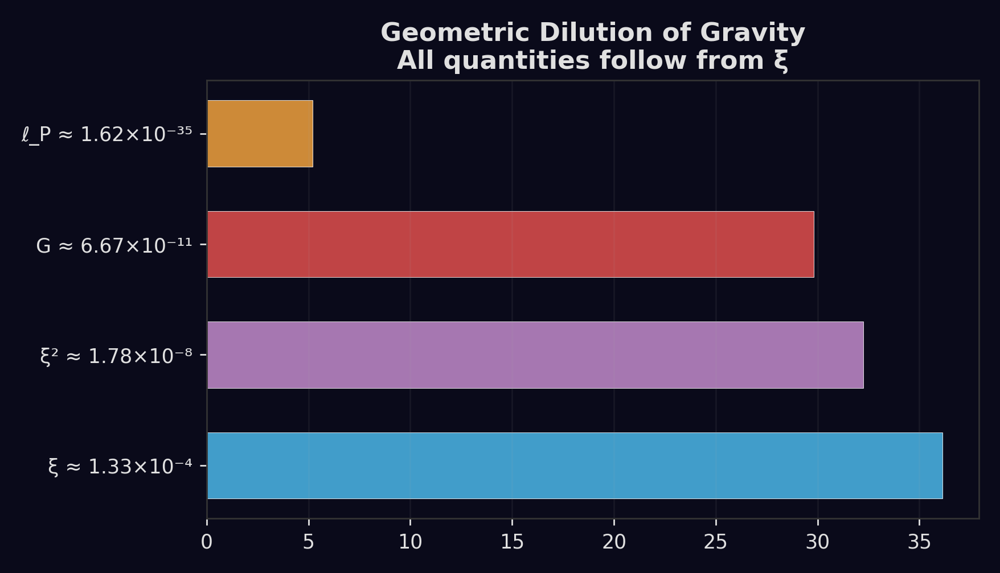
Die vier Kräfte — Elektromagnetismus, schwache und starke Wechselwirkung, Gravitation — sind wie verschiedene Melodien, die aus demselben fraktalen Instrument gespielt werden. ξ ist die Saitenspannung, die alle Töne bestimmt.
Das Vakuumfeld Φ = ρ·eiθ/ξ hat zwei Steifigkeiten: die Amplituden-Steifigkeit (→ Gravitation, schwache Kraft) und die Phasen-Steifigkeit (→ Elektromagnetismus, starke Kraft). In natürlichen Einheiten gilt α = 1 und G = 1 — die „kleinen" SI-Werte entstehen durch Umrechnungsfaktoren.
Feinstrukturkonstante aus ξ²-Skalierung der Phasensteifigkeit
Gravitationskonstante: ξ⁴-Dämpfung der Planck-Einheiten
QCD-Skala direkt aus fraktaler Phasensteifigkeit
Vakuumenergie parameterfrei aus ξ²
Alle Werte stimmen auf hoher Präzision — parameterfrei aus ξ. Wo GUTs drei Kräfte bei 10¹⁶ GeV vereinheitlichen und Gravitation draußen lassen, vereinheitlicht die FFGFT alle vier Kräfte in 4D mit einem Parameter.
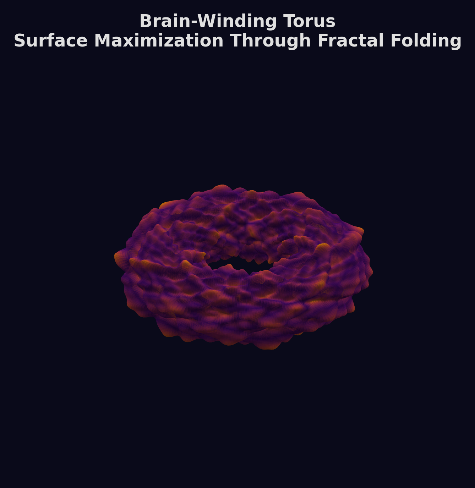
Im Standardmodell sind die Yukawa-Kopplungen freie Parameter — 19 an der Zahl, über 12 Größenordnungen gespannt. Kein Prinzip erklärt diese Hierarchie. Die FFGFT liefert eine parameterfrei Erklärung.
Teilchen sind fraktale Resonanzmoden des Vakuumfeldes. Leichte Teilchen (Photonen, Neutrinos) sind hochfrequente Phasenmoden δθ. Schwere Teilchen (Quarks, W/Z-Bosonen) sind Amplitudenmoden δρ. Die effektive Masse skaliert mit der Hierarchiestufe:
ξ ≈ 10⁻⁴ erzeugt exponentielle Hierarchien: ξ¹ ≈ 10⁻⁴, ξ² ≈ 10⁻⁸, ξ³ ≈ 10⁻¹². So ist das Top-Quark (n ≈ 0) schwer, das Elektron (n ≈ 2) leicht, und Neutrinos (n ≈ 3–4) extrem leicht. Die drei Generationen entsprechen fraktalen Hierarchiestufen — keine Willkür, sondern geometrische Notwendigkeit.
Die Teilchenwelt ist ein Orchester fraktaler Schwingungen — alle Töne aus einer einzigen Saite. Leichte Neutrinos sind schnelle Gedanken im kosmischen Gehirn, schwere Quarks tiefe, stabile Strukturen.
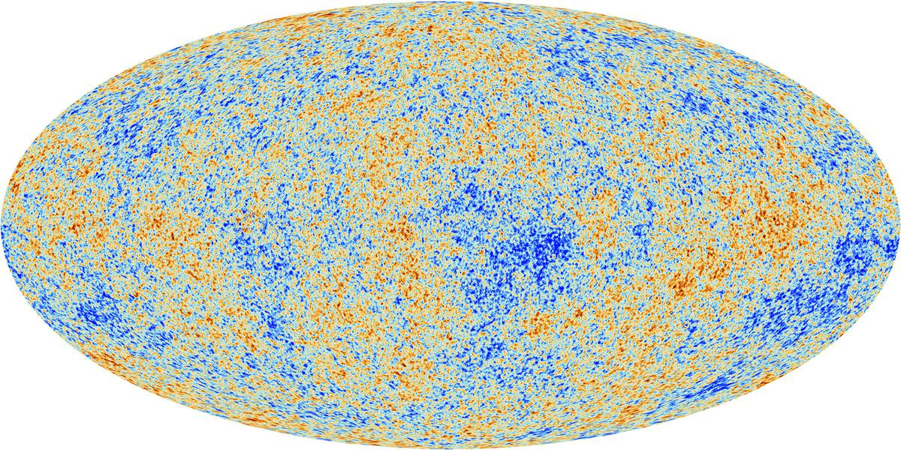
Das Standardmodell braucht Inflation — eine exponentielle Expansion in den ersten 10⁻³² Sekunden — um Horizont-, Flachheits- und Monopolproblem zu lösen. Inflation erfordert ein Inflaton-Feld, Feinabstimmung und führt zum Multiversum.
Horizontproblem: Die FFGFT löst es durch fraktale Phasenkohärenz. Das Vakuumfeld war nie unkorreliert — die Phasenfluktuation wächst nur logarithmisch mit der Distanz: ⟨Δθ²⟩ = ξ · ln(L/ℓ₀). Wie ein Kristall, dessen Atome alle phasenkohärent sind — nicht weil sie kommunizieren, sondern weil die Kristallordnung die Phase global festlegt.
Flachheitsproblem: Ω − 1 ∝ ξ² ≈ 10⁻⁸. Das Universum ist „fast flach", weil die fraktale Dimension nahe bei 3 liegt — geometrisch erzwungen, keine Feinabstimmung.
Spektraler Index: Das Fluktuationsspektrum ist nahezu skaleninvariant: ns ≈ 1 − ξ ln(k/k₀) ≈ 0,96 — exakt wie beobachtet (Planck-Daten).
Das Universum ist von Anfang an ein kohärentes, fraktales Ganzes — wie ein Gehirn, das bereits bei der Geburt global vernetzt ist.
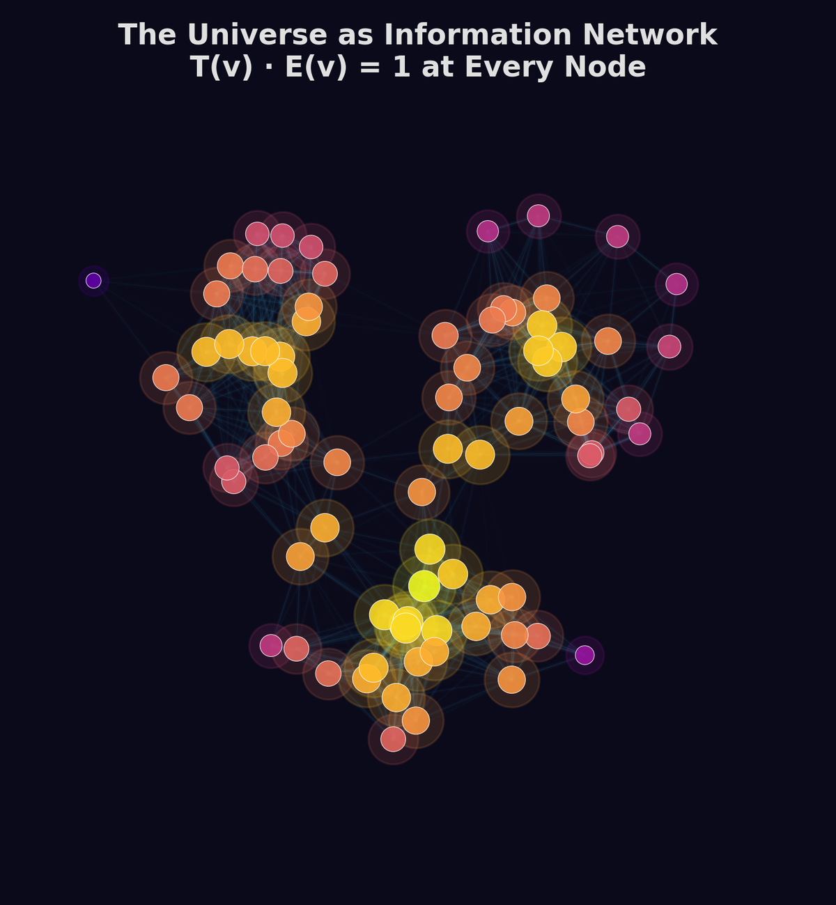
In der FFGFT ist der Big Bang keine Explosion aus dem Nichts, keine Singularität. Er war ein Phasenübergang — der Moment, in dem das kosmische Gehirn zu „denken" begann.
Vor dem Übergang: Das „schlafende" Universum — minimale Vakuumamplitude ρ ≈ ρmin, gleichförmige Phase, fraktale Tiefe Df ≈ 2. Wie ein Gehirn vor der Entwicklung: glatte Oberfläche ohne Windungen.
Der Übergang: ρ wächst plötzlich exponentiell, θ differenziert sich. Aus stiller Potentialität wird strukturierte Realität. Die fraktale Dimension stabilisiert bei Df = 3 − ξ₀. Keine Explosion, sondern Erwachen.
Danach: ρ stabilisiert sich, θ entwickelt sich kohärent weiter. Das Universum „vertieft" sich — ξ(t) nimmt langsam ab, die fraktale Komplexität wächst asymptotisch einem stationären Endzustand entgegen.
Die FFGFT beschreibt den Übergang mathematisch präzise, lässt aber eine tiefere Frage offen: Warum erwachte das stille Prä-Vakuum? Ob der Impuls intrinsisch war oder auf etwas jenseits des physikalischen Systems verweist — diese Frage übersteigt die Naturwissenschaft.
Astronomen sehen bei fernen Galaxien eine systematische Rotverschiebung. Im Standardmodell: Doppler-Effekt durch expandierenden Raum. In der FFGFT: eine Änderung der fraktalen Skalenstruktur zwischen Emission und Beobachtung.
Wie eine Melodie, die durch ein sich langsam verformendes Medium wandert und dadurch tiefer klingt, so wird Licht durch die sich vertiefende fraktale Struktur rotverschoben. Es gibt keine Bewegung — nur eine Perspektivänderung durch dynamische Geometrie.
Die „Hubble-Konstante" ist keine Expansionsrate, sondern die Änderungsrate von ξ:
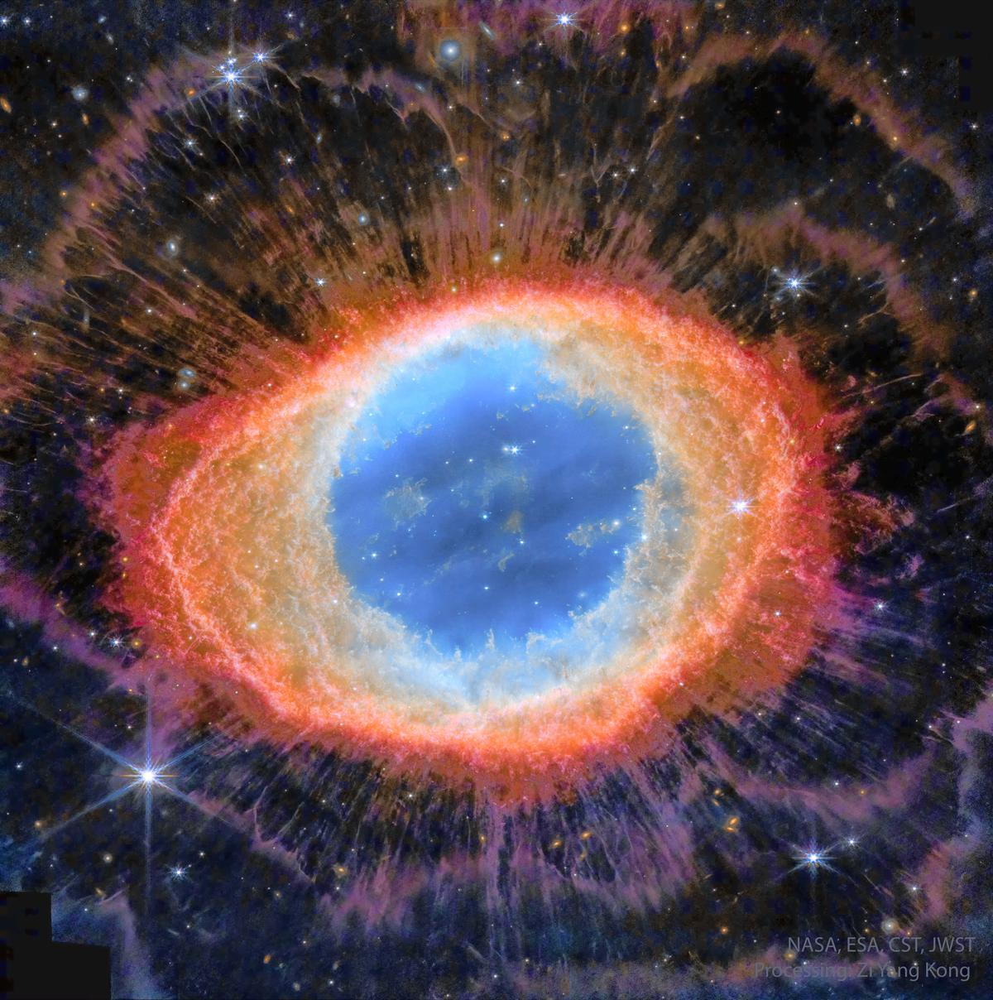
Ringnebel M57 — toroidale Strukturen auf kosmischer Skala
Frequenzunabhängigkeit: Da die Rotverschiebung geometrisch ist (Pfadstreckung im fraktalen Vakuum), ist sie strikt frequenzunabhängig — anders als bei „Tired Light"-Modellen, die frequenzabhängig streuen.
Physikalische Ausdehnung des Raums, Big Bang als Singularität, Dunkle Materie als Teilchen, 6+ freie Parameter, Inflation nötig
Raum ist statisch, Big Bang als Phasenübergang, Dunkle Materie als Geometrie, 1 Parameter (ξ), keine Inflation nötig
Die vier Epochen des Universums in der FFGFT:
t < 10⁻³² s — Das frisch erwachte Vakuum. Wie ein neugeborenes Gehirn ohne Windungen.
ξ nimmt langsam ab, Energie dominiert. Neuronale Migration, erste Verbindungsbildung.
Galaxien als fraktale Resonanzmuster. Massive Synaptogenese — Bildung von Verbindungen.
ξ̇/ξ dominiert — die „beschleunigte Expansion". Reifung und Optimierung der Strukturen.
Das Gehirn denkt weiter. Das Universum vertieft sich. Und wir — mitten darin — beginnen gerade erst zu verstehen, was das bedeutet.